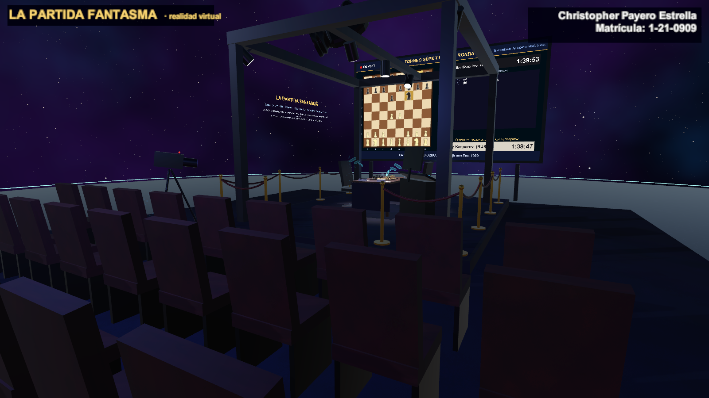
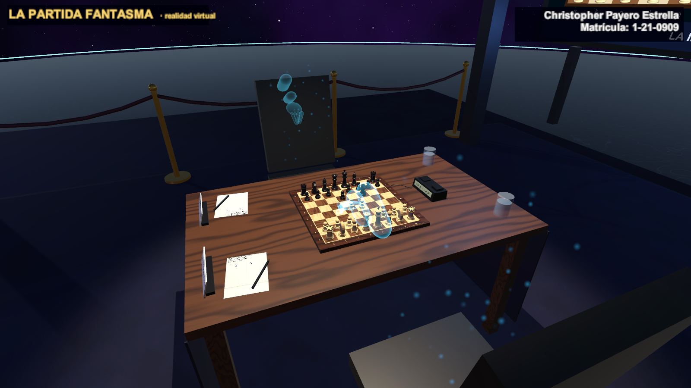
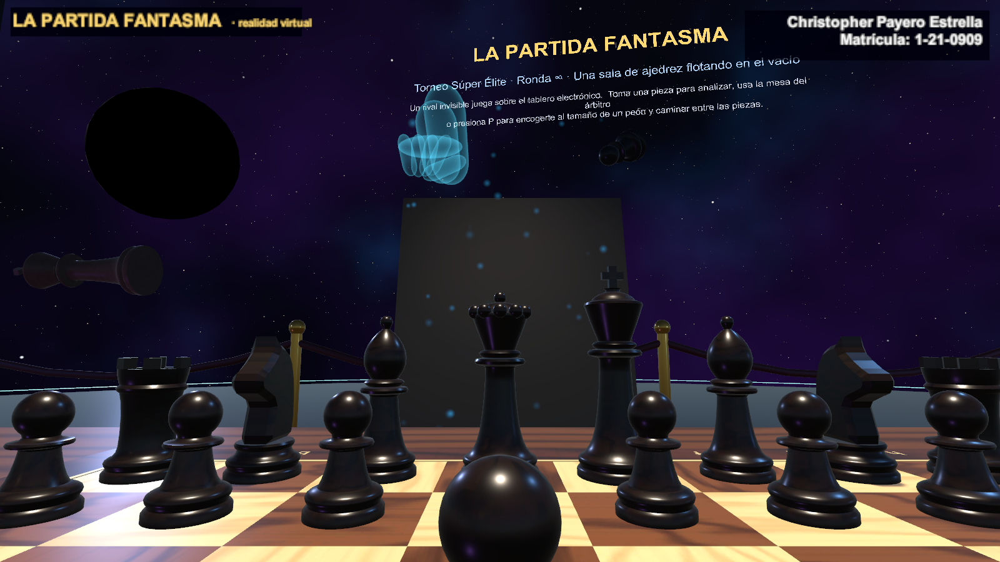
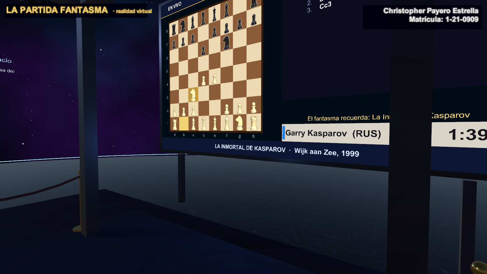

PROGRAMACIÓN DE VIDEOJUEGOS
Realidad Aumentada
y Realidad Virtual
Investigación y actividad práctica en Unity: «La Partida Fantasma VR»

Asignatura: Programación de Videojuegos
Profesor: Iván Mendoza
Alumno: Christopher Payero Estrella · Matrícula: 1-21-0909
Fecha: noviembre de 2026
1. Realidad Aumentada
1.1 Definición
La realidad aumentada (RA, o AR por sus siglas en inglés) es una tecnología que agrega información digital encima del mundo real
y en tiempo real. Uno sigue viendo su entorno de siempre, pero a través de la cámara del celular, de una tableta o de unos lentes especiales
aparecen objetos 3D, textos, flechas, sonidos o animaciones que parecen estar ahí mismo, pegados a la mesa, a la pared o a una persona.
Lo importante es que la RA no reemplaza la realidad, la complementa. Por ejemplo, cuando un filtro de Instagram le pone unos lentes
a tu cara y se mueven contigo, o cuando Google Maps te dibuja una flecha sobre la calle para decirte por dónde doblar, eso es realidad aumentada.
La definición más citada es la de Ronald Azuma (1997), que dice que un sistema de RA tiene que cumplir tres cosas:
combinar lo real con lo virtual, ser interactivo en tiempo real y estar «registrado» en 3D, es decir, que los objetos virtuales queden
bien alineados con los objetos reales aunque uno se mueva.
1.2 Padre de la Realidad Aumentada
Al estadounidense Ivan Sutherland se le considera el padre de la realidad aumentada (y de los gráficos por computadora en general).
En 1968, en la Universidad de Harvard, construyó junto a su alumno Bob Sproull el primer casco de visualización, apodado
«La Espada de Damocles» (The Sword of Damocles). Era tan pesado que tenía que colgar del techo con un brazo mecánico,
pero mostraba figuras de alambre en 3D encima de lo que la persona veía y las movía según el giro de la cabeza. Eso es, básicamente,
la idea de la RA y también de la RV moderna. Antes, en 1965, Sutherland había escrito el ensayo «The Ultimate Display»,
donde ya imaginaba una pantalla capaz de mostrar mundos que no existen.
Otros nombres importantes:
- Tom Caudell (Boeing): inventó el término augmented reality alrededor de 1990, cuando con David Mizell diseñó un sistema
que mostraba a los trabajadores cómo armar los cables de los aviones sin tener que mirar los planos (lo publicaron en 1992).
- Louis Rosenberg: en 1992 creó Virtual Fixtures para la Fuerza Aérea de EE. UU., uno de los primeros sistemas de RA completos e interactivos.
- Hirokazu Kato: en 1999 publicó ARToolKit, la librería gratuita de marcadores que hizo posible que cualquiera programara RA.
1.3 Niveles de la Realidad Aumentada
Los niveles miden qué tan compleja es la RA, desde lo más simple hasta lo más inmersivo (clasificación de Lens-Fitzgerald, muy usada en libros de educación):
| Nivel | Nombre | ¿Cómo funciona? | Ejemplo |
|---|
| Nivel 0 | Enlazar el mundo físico | Un código impreso (QR o de barras) lleva a un contenido digital. No hay objetos 3D sobre la imagen, solo un enlace. | Menú de restaurante con QR |
| Nivel 1 | RA con marcadores | La cámara reconoce un patrón impreso (normalmente en blanco y negro) y encima de él dibuja un modelo 3D que se mueve con el papel. | Cartas AR de la Nintendo 3DS, ARToolKit |
| Nivel 2 | RA sin marcadores | Ya no hace falta un patrón: el dispositivo usa GPS, brújula, acelerómetro o reconoce superficies, imágenes y objetos reales. | Pokémon GO, IKEA Place |
| Nivel 3 | Visión aumentada | La información se ve directamente en lentes o visores, sin sostener un celular. Es una experiencia más personal y envolvente. | Microsoft HoloLens, Meta Quest 3 con passthrough, Apple Vision Pro |
1.4 Características
- Mezcla lo real y lo virtual en la misma vista.
- Funciona en tiempo real: si mueves el celular, el objeto virtual se actualiza al instante.
- Está registrada en 3D: los objetos virtuales se quedan «anclados» en su sitio del mundo real.
- Es interactiva: se puede tocar, girar o hablarle al contenido.
- Usa sensores: cámara, GPS, giroscopio, acelerómetro, brújula y a veces sensores de profundidad (LiDAR).
- No aísla al usuario: sigue viendo y oyendo a las personas que tiene al lado.
- Es accesible: casi cualquier celular moderno puede mostrar RA sin comprar nada extra.
1.5 Tipos de Realidad Aumentada
| Tipo | Explicación | Ejemplo |
|---|
| Basada en marcadores | Necesita una imagen o patrón conocido. Cuando la cámara lo ve, calcula su posición y dibuja el contenido encima. | Libros con láminas que «cobran vida» |
| Sin marcadores (markerless) | Detecta el suelo, las mesas y las paredes con la cámara y los sensores, y coloca los objetos donde uno toque. | Probar un mueble en la sala |
| Por geolocalización | Usa el GPS y la brújula para poner contenido en lugares reales del mapa. | Pokémon GO, Ingress |
| Por proyección | Proyecta luz directamente sobre superficies reales; a veces detecta cuando uno la toca. | Teclados láser, mesas interactivas |
| Por superposición | Reemplaza total o parcialmente la vista de un objeto por una versión aumentada de él. | Ver los huesos en una radiografía sobre el cuerpo |
| Por reconocimiento de objetos o rostros | Identifica caras u objetos en 3D y les agrega elementos que siguen sus movimientos. | Filtros de Instagram, Snapchat y TikTok |
1.6 Ventajas y desventajas
Ventajas
- Da información útil justo donde se necesita (instrucciones, rutas, datos de un producto).
- Hace el aprendizaje más visual: un estudiante puede ver un corazón en 3D latiendo sobre su pupitre.
- No hace falta equipo caro; basta un celular.
- Permite «probar antes de comprar» (ropa, muebles, maquillaje).
- En la industria reduce errores, porque el técnico ve los pasos encima de la máquina.
- No separa al usuario de su entorno ni de otras personas.
Desventajas
- Gasta mucha batería y exige un buen procesador.
- Depende de la luz y de la cámara: con poca luz o superficies lisas el seguimiento falla.
- Puede distraer: hubo accidentes de personas jugando Pokémon GO mientras caminaban o manejaban.
- Riesgos de privacidad, porque la cámara siempre está grabando el entorno.
- Los lentes de RA (HoloLens, Vision Pro) son muy caros y tienen un campo de visión limitado.
- Desarrollar contenido 3D de calidad lleva tiempo y conocimientos.
2. Realidad Virtual
2.1 Definición
La realidad virtual (RV, o VR) es un entorno creado completamente por computadora en el que la persona se siente dentro de él.
A diferencia de la RA, aquí el mundo real desaparece: uno se pone un visor (casco o headset) que le tapa toda la vista, y lo que ve
y oye es un lugar artificial. El visor sigue los movimientos de la cabeza y, con los controles o las manos, se puede tocar, agarrar y mover
cosas dentro de ese mundo.
El término lo hizo popular Jaron Lanier en los años 80 con su empresa VPL Research, que vendió de los primeros visores y guantes de datos.
Lo que se busca en la RV es la inmersión (sentir que estás ahí) y la presencia (que el cerebro se «crea» el lugar).
2.2 Tipos de Realidad Virtual
Según el nivel de inmersión
| Tipo | Explicación | Ejemplo |
|---|
| No inmersiva | El mundo virtual se ve en una pantalla normal (monitor o TV) y se controla con teclado, ratón o mando. Uno no se siente adentro. | Recorridos 3D de una casa en la web, Second Life |
| Semiinmersiva | Pantallas grandes o curvas, cabinas y asientos con movimiento. Envuelve parte de la vista. | Simuladores de vuelo de pilotos, cines 4D |
| Inmersiva | Visor en la cabeza con seguimiento de movimiento y sonido 3D; la vista completa es virtual. | Meta Quest 3, Valve Index, PlayStation VR2 |
Según el equipo que se usa
- RV conectada a PC (PC VR): el visor se conecta a una computadora potente, que hace todo el trabajo. Máxima calidad gráfica. Ej.: Valve Index, HTC Vive.
- RV autónoma (standalone): el visor tiene su propio procesador y batería; no necesita cables. Ej.: Meta Quest 3, Pico 4.
- RV en consola: el visor funciona con una consola de videojuegos. Ej.: PlayStation VR2.
- RV con celular: el celular se mete dentro de unos lentes de cartón o plástico. Ej.: Google Cardboard (ya casi no se usa).
- RV en el navegador (WebXR): una página web que, abierta desde el navegador del visor, entra en modo VR sin instalar nada. Es la que usé para publicar mi proyecto.
También se habla de 3 grados de libertad (3DoF), cuando el visor solo detecta hacia dónde gira la cabeza, y de
6 grados de libertad (6DoF), cuando además detecta si uno camina, se agacha o se inclina.
2.3 Ventajas y desventajas
Ventajas
- La inmersión es total; se siente como estar en otro lugar.
- Permite entrenar sin riesgo: pilotos, cirujanos, bomberos y militares practican situaciones peligrosas.
- Se usa en terapia, por ejemplo para tratar fobias (miedo a las alturas o a volar).
- En educación permite visitar lugares imposibles: el interior de una célula, Marte o la antigua Roma.
- Mejora el trabajo y las reuniones a distancia en espacios 3D compartidos.
- Da experiencias de juego mucho más físicas y emocionantes.
Desventajas
- Cibermareo: a algunas personas les da mareo o náuseas cuando la vista se mueve pero el cuerpo no.
- El equipo es caro, sobre todo si necesita una PC potente.
- Aísla a la persona de lo que pasa a su alrededor; puede chocar con muebles.
- Usarlo mucho tiempo cansa la vista y el cuello por el peso del visor.
- Necesita espacio libre para moverse.
- Hay menos contenido que en otras plataformas y los fabricantes no recomiendan su uso a niños pequeños.
3. Diferencia entre Realidad Aumentada y Realidad Virtual
La forma más fácil de entenderlo: la RA le agrega cosas al mundo real; la RV lo reemplaza por completo.
En 1994 Paul Milgram y Fumio Kishino lo explicaron con el continuo realidad–virtualidad, una línea que va del mundo totalmente real
al mundo totalmente virtual. La realidad aumentada queda cerca del lado real y la realidad virtual en el otro extremo.
Entre medio está la realidad mixta, donde los objetos virtuales además interactúan con los reales (por ejemplo, una pelota virtual que rebota en tu mesa de verdad).
Entorno real
Realidad aumentada
Virtualidad aumentada
Realidad virtual
◀ más mundo realRealidad mixta (todo lo del medio)más mundo virtual ▶
| Aspecto | Realidad Aumentada | Realidad Virtual |
|---|
| Qué hace | Agrega objetos digitales al mundo real | Crea un mundo totalmente digital |
| Entorno | Se sigue viendo el lugar donde uno está | El lugar real desaparece de la vista |
| Inmersión | Parcial | Total |
| Equipo | Celular, tableta o lentes transparentes | Visor cerrado con controles o seguimiento de manos |
| Movilidad | Se puede usar en la calle y caminando | Se usa en un espacio controlado y seguro |
| Interacción social | Uno sigue viendo a las personas cerca | Uno se aísla (salvo en mundos multijugador) |
| Costo | Bajo si se usa el celular | Medio o alto |
| Uso típico | Navegación, compras, filtros, educación, mantenimiento industrial | Videojuegos, simuladores, entrenamiento, terapia, turismo virtual |
| En Unity | AR Foundation (ARCore/ARKit) o Vuforia | OpenXR, XR Interaction Toolkit, WebXR |
Hoy la línea entre las dos se está borrando: visores como el Meta Quest 3 o el Apple Vision Pro hacen las dos cosas,
porque tienen cámaras a color que muestran la habitación real (passthrough) y pueden pasar de RA a RV en un segundo.
4. Realidad Aumentada y Virtual en Videojuegos
Los videojuegos son una de las áreas que más ha empujado estas tecnologías, porque buscan justamente que el jugador se meta en la experiencia.
4.1 Realidad aumentada en juegos
- Pokémon GO (Niantic, 2016): el ejemplo más famoso. Usa geolocalización para poner Pokémon en calles y parques reales; fue descargado cientos de millones de veces y sacó a mucha gente a caminar.
- Ingress (Niantic, 2012): el antecesor de Pokémon GO, con dos equipos que conquistan «portales» en lugares reales.
- Cartas AR de la Nintendo 3DS (2011): con una carta sobre la mesa aparecían personajes y minijuegos encima.
- EyePet (PlayStation 3, 2009): una mascota virtual que «vivía» en la sala del jugador a través de la cámara.
- Pikmin Bloom y Monster Hunter Now: juegos de caminar que siguen la idea de Pokémon GO.
4.2 Realidad virtual en juegos
- Beat Saber (2019): cortar bloques con sables al ritmo de la música; uno de los juegos de VR más vendidos.
- Half-Life: Alyx (Valve, 2020): considerado de los mejores juegos de VR; demostró que se puede hacer una gran aventura completa en VR.
- Superhot VR: el tiempo solo avanza cuando uno se mueve.
- Resident Evil 7 (modo PS VR): el terror se vuelve mucho más intenso cuando uno está «dentro» de la casa.
- Gorilla Tag y Rec Room: juegos sociales donde uno se mueve con los brazos; muy populares entre jóvenes.
4.3 ¿Qué aportan y qué retos tienen?
Aportan movimiento físico (uno se agacha, esquiva y apunta con el brazo), presencia y nuevas formas de jugar que no existen con un mando.
Los retos son diseñar para que nadie se maree (por eso muchos juegos usan teletransporte o giros por pasos), lograr buenos gráficos a 72–120 cuadros
por segundo en cada ojo, y el precio del equipo, que todavía limita cuánta gente puede jugar. Un ejemplo de lo difícil que fue al inicio es la
Virtual Boy de Nintendo (1995), que fracasó porque daba dolor de cabeza y solo mostraba rojo y negro.
5. Realidad Aumentada y Virtual en Unity
Unity es uno de los motores más usados para crear experiencias de RA y RV (una gran parte de los juegos de Meta Quest están hechos con él).
No hace falta programar cada visor por separado: Unity tiene un sistema llamado XR (de extended reality, que incluye RA, RV y realidad mixta)
que funciona como una capa común para todos los dispositivos.
5.1 Herramientas principales
| Paquete | Para qué sirve |
|---|
| XR Plug-in Management | Es donde se elige qué «cargador» usar en cada plataforma (OpenXR para PC, el de Android, el de WebGL, etc.). Al iniciar el juego, enciende el visor. |
| OpenXR | Estándar abierto del grupo Khronos. Con un solo código el juego funciona en Meta Quest, Valve Index, HTC Vive, Windows Mixed Reality y otros. Solo hay que activar los perfiles de controles. |
| XR Interaction Toolkit | Componentes ya hechos para VR: agarrar objetos, rayos láser para señalar, teletransporte, botones y menús en 3D. |
| AR Foundation | Capa común para RA en celulares: por debajo usa ARCore (Android) y ARKit (iPhone). Detecta planos, imágenes, caras y la luz del ambiente. |
| XR Hands | Seguimiento de las manos sin controles (los dedos de la persona). |
| Input System | Lee los gatillos, botones y palancas de los controles de VR igual que un mando normal. |
| Plantillas | Unity Hub trae plantillas listas: VR, AR Mobile y Mixed Reality, con una escena de ejemplo ya configurada. |
| WebXR Export (comunidad) | Paquete gratuito de De-Panther que permite exportar a WebGL y entrar en VR o RA desde el navegador del visor o del celular. |
5.2 Pasos generales para un proyecto de VR
- Crear el proyecto (o usar la plantilla VR) e instalar XR Plug-in Management y OpenXR desde el Package Manager.
- En Project Settings → XR Plug-in Management marcar OpenXR y agregar los perfiles de los controles (por ejemplo, Oculus Touch).
- Crear un «XR Origin»: un objeto que representa al jugador, con la cámara como cabeza y dos objetos para las manos que siguen a los controles.
- Agregar interacción: rayos para señalar, agarre de objetos y una forma de moverse (caminar con la palanca o teletransporte).
- Optimizar: en VR se dibuja la escena dos veces (una por ojo), así que se usa Single Pass Instanced y se cuidan las luces y sombras.
- Compilar para la plataforma (Windows, Android para Quest o WebGL) y probar con el visor.
5.3 Pasos generales para un proyecto de RA
- Instalar AR Foundation y el plugin de la plataforma (ARCore para Android o ARKit para iOS).
- Poner en la escena un AR Session y un XR Origin (AR) con la cámara del celular.
- Agregar administradores según lo que se quiera detectar: AR Plane Manager (suelos y mesas), AR Raycast Manager (tocar la pantalla para colocar objetos), AR Tracked Image Manager (imágenes).
- Compilar para Android o iOS y probar en un celular compatible.
6. Vuforia en Unity
Vuforia Engine es un kit de desarrollo (SDK) de realidad aumentada creado originalmente por Qualcomm y que desde 2015 pertenece a la empresa PTC.
Es de los más conocidos para hacer RA con marcadores e imágenes, y se integra con Unity como un paquete más. Su gran ventaja es que
reconoce imágenes y objetos reales de forma muy estable y funciona en Android, iOS, lentes como HoloLens e incluso con la cámara web de la PC mientras se prueba.
6.1 Tipos de «targets» (lo que Vuforia puede reconocer)
| Target | Descripción |
|---|
| Image Target | Una imagen plana (foto, portada de libro, etiqueta). Es el más usado. Mientras más detalles y contraste tenga, mejor se reconoce (Vuforia le da una calificación de estrellas). |
| Multi Target | Varias imágenes en las caras de una caja. |
| Cylinder Target | Imágenes enrolladas en un cilindro, como una lata o una botella. |
| Model Target | Un objeto 3D real reconocido por su forma, a partir de su modelo CAD (un carro, una máquina, un juguete). |
| Area Target | Un espacio completo escaneado (una habitación o una fábrica). |
| Ground Plane | Detecta el suelo o una mesa para colocar objetos sin marcadores. |
| VuMark | Un marcador diseñado a gusto que además guarda un código único (como un QR con estilo propio). |
6.2 Cómo se usa en Unity (paso a paso)
- Crear una cuenta gratis en el portal de desarrolladores de Vuforia (developer.vuforia.com) y generar una License Key (la licencia básica es gratuita para desarrollar).
- Descargar el paquete Vuforia Engine para Unity e importarlo al proyecto (se agrega en el Package Manager).
- Borrar la Main Camera y agregar una AR Camera (GameObject → Vuforia Engine → AR Camera).
- En la AR Camera abrir Open Vuforia Engine Configuration y pegar la License Key.
- En el Target Manager del portal crear una base de datos, subir la imagen que servirá de marcador y descargarla como paquete de Unity. Importarla al proyecto. (En versiones nuevas también se puede arrastrar la imagen directamente al componente.)
- Agregar un Image Target (GameObject → Vuforia Engine → Image Target) y elegir la base de datos y la imagen.
- Poner como hijo del Image Target el modelo 3D, personaje o animación que se quiere mostrar. Así aparece pegado a la imagen.
- Darle Play: con la cámara web se apunta a la imagen impresa (o en el celular) y el modelo aparece encima.
- Con el componente Default Observer Event Handler se programan eventos: qué pasa cuando el marcador se encuentra (On Target Found) y cuando se pierde (On Target Lost), por ejemplo reproducir un sonido o una animación.
- Compilar para Android o iOS.
Vuforia vs. AR Foundation: Vuforia es más fácil para marcadores e imágenes y funciona incluso en celulares sin ARCore,
pero es de pago para uso comercial y muestra una marca de agua con la licencia gratuita. AR Foundation es gratis y oficial de Unity,
pero depende de que el celular soporte ARCore o ARKit.
7. Actividad: «La Partida Fantasma VR»
Para la parte práctica decidí hacer un espacio de realidad virtual en lugar de otro juego de disparos o de plataformas.
Como ajedrecista, quise llevar a la VR algo que conozco bien: una sala de torneo de la élite de la FIDE con un tablero de madera
electrónico tipo DGT (los que transmiten las jugadas en vivo por internet), pero con un toque extraño: la sala flota en el vacío,
bajo un cielo de estrellas, y frente al tablero no hay nadie. Un jugador fantasma, del que solo se ven unas manos espectrales,
mueve las piezas y pulsa el reloj, recordando partidas históricas.

La mano espectral del fantasma mueve las piezas sobre el tablero DGT y pulsa el reloj.
7.1 ¿Qué se puede hacer?
- Ver la exhibición: el fantasma reproduce 5 partidas históricas (Kasparov–Topalov 1999, la Inmortal de 1851, la Partida de la Ópera de Morphy,
la Partida del Siglo de Fischer y Deep Blue–Kasparov 1997). La pantalla gigante de transmisión, la planilla y el reloj se actualizan solos.
- Análisis libre: si uno agarra una pieza, el fantasma se aparta. El tablero marca las casillas legales y rechaza las jugadas ilegales (la pieza vuelve a su casilla).
- Duelo: se juega con blancas contra el fantasma, que piensa con un pequeño motor de ajedrez propio.
- Modo Peón: el visitante se encoge al tamaño de una pieza y camina por encima del tablero, entre los reyes y las damas.
- Consola del árbitro: botones físicos que se aprietan con la mano para pausar, cambiar de partida, retar al fantasma o reiniciar.
7.2 Cómo se aplicó la realidad virtual
- OpenXR en la versión para Windows (.exe): funciona con visores de PC (Meta Quest con Link, Valve Index, HTC Vive, Windows MR). La cabeza y las dos manos siguen al visor.
- WebXR en la versión publicada en la web: desde el navegador del Meta Quest se pulsa «Entrar en realidad virtual».
- Con los controles: gatillo o botón de agarre para tomar piezas, rayo para señalar desde lejos, palanca izquierda para caminar y derecha para girar por pasos (evita el mareo).
- Sin visor también se puede recorrer con teclado y ratón (WASD, clic derecho para mirar, clic izquierdo para agarrar), para que cualquiera pueda probarlo.
- El nombre y la matrícula están en la esquina superior derecha tanto en pantalla como dentro del visor.

Modo Peón: caminando sobre el tablero.

Pantalla gigante de transmisión.
Todo (las piezas Staunton torneadas, la madera, los sonidos y la sala) se genera desde código en Unity, sin modelos ni sonidos descargados.
Los enlaces al código, al juego publicado y al ejecutable están en la portada.
Fuentes consultadas
- Azuma, R. (1997). A Survey of Augmented Reality. Presence: Teleoperators and Virtual Environments, 6(4), 355-385.
- Sutherland, I. (1965). The Ultimate Display. Proceedings of the IFIP Congress.
- Sutherland, I. (1968). A head-mounted three dimensional display. Fall Joint Computer Conference, AFIPS.
- Caudell, T. y Mizell, D. (1992). Augmented reality: an application of heads-up display technology to manual manufacturing processes. Hawaii International Conference on System Sciences.
- Milgram, P. y Kishino, F. (1994). A Taxonomy of Mixed Reality Visual Displays. IEICE Transactions on Information Systems.
- Prendes, C. (2015). Realidad aumentada y educación: análisis de experiencias prácticas. Píxel-Bit, Revista de Medios y Educación, 46 (niveles de RA según Lens-Fitzgerald).
- Documentación de Unity: XR in Unity, AR Foundation, OpenXR Plugin y XR Interaction Toolkit. docs.unity3d.com
- Documentación de PTC Vuforia: Getting Started with Vuforia Engine in Unity y Vuforia Features. developer.vuforia.com/library
- De-Panther. WebXR Export para Unity. github.com/De-Panther/unity-webxr-export
- Khronos Group. OpenXR Overview. khronos.org/openxr